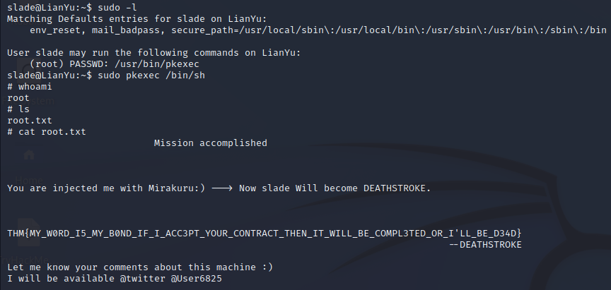

Lian_Yu#
This one is an archer themed room. Its still in the ‘easy’ category but has quite a bit going on. Not a fan of the show but quite enjoyed this room. It takes quite a lot of steps to get to the user flag, but its really easy to get from user to root.
First Steps#
As normal. Lets start with an Nmap scan.
So we’ve got:
21 : FTP
22 : SSH
80 : HTTP
111 : RPC
The theme tends to be starting with the web site, bring it up.
This looks to be a bit of flavour text and background. It makes the room a bit more interesting but not so helpful for breaking and entering. At this stage we can spin up GoBuster. I also spin up Nikto but it’s more a ‘cover all bases’ step.
Looks like we’ve found a /island page.
On first glance it looks useless as its missing the code word (but does have a rather bold name). Quickly checking the page source (or just highlighting the whole page) gives what we’re after though.
That looks like the end of our /island journey. Time to looks for more sub directories
After a bit of time, look what we get. A new subdirectory and the answer to our first actual question.
Based on the text hidded in the source, my first thought was that this was somewhere we need to fake a cookie. I tried variants of the data we already have
avail, available, etc
ticket, tkt, .ticket, etc
vigilante
Lian_Yu, Lian Yu, LianYu
None of these worked. Annoying….
.ticket could be a file extension however. Time to spin up a gobuster session.
Looks like we have a password (RTy8yhBQdscX), but it doesnt work. Looks like it may have been encoded. Take a look at it in CyberChef.
There doesnt appear to be anything to say what kind of encoding has been done. Its more than base 16. 32 translates to nothing fun and 64 is the same. 58 on the other hand…
!#th3h00d. Still looks a bit random, but if you’ve seen the show, you will know that ‘The Hood’ is “Green Arrow’s” first vigilante name. Lets try it on for size.
Try SSH
Nope
Try FTP
Woohoo!!
Exploring FTP#
Great, connected via FTP. Lets take a look whats inside and grab them.
3 files
aa : picture of a character… meh
Queen’s_Gambit.png… flavour text?
Leave_me_alone…. well if that doesnt scream ‘take a look around’, I dont know what does…
If we try opening the fun file, we cant, it has errors. My first thought is its hiding data.
Hex editor ends with the IEND, so thats the easy check not helping us….
The start doesnt look right though… Don’t they normally start with an identifier? A quick wikipedia search says it does.. It should be .PNG then other standard rules.
.PNG (89504E47)
0D0A
1A0A
Lets make these changes real quick
And hey look, we now have a valid image and can open it. It looks something like this.
I’ll be honest, thats kind of anti climactic… but what is it for? Taking a closer look at the images, we can see that 2 are PNGs and one is a JPG. Whats fun about .JPG files? Thats right, they are used by steghide.
Sweet. Taking a look in the zip, we have a couple of files.
passwd.txt : Flavour text?
shado : has a password, M3tahuman
Trying the password with the user “vigilante’ still doesnt work though… I spun up hydra here but it didnt give me anything helpful. What other options do we have…
We didnt finish exploring FTP. CD up one level
And use it to log in
Exploring SSH#
Now that we are logged in, lets grab that user flag…
Start by seeing what we can run as root…
Ok, pkexec… GTFOBins has a command for that… And it works
Grab the root flag.
This is all sumarised below, it felt a bit excessive to screenshot every step so its all together.
